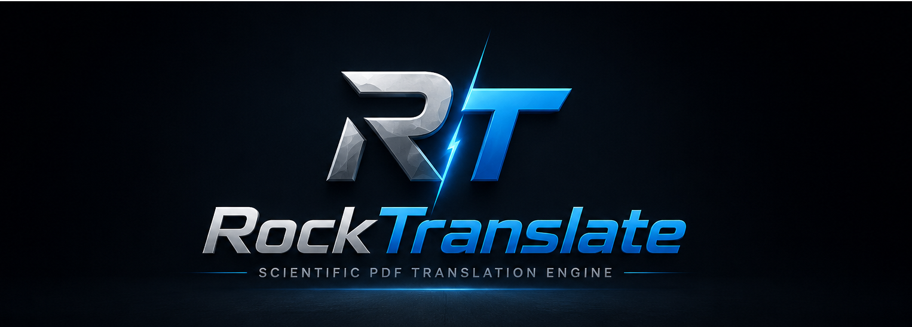
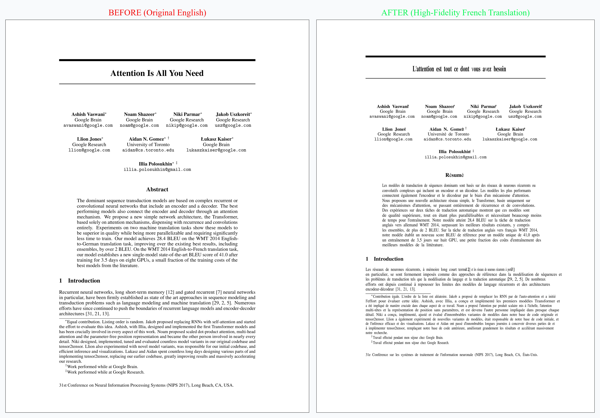
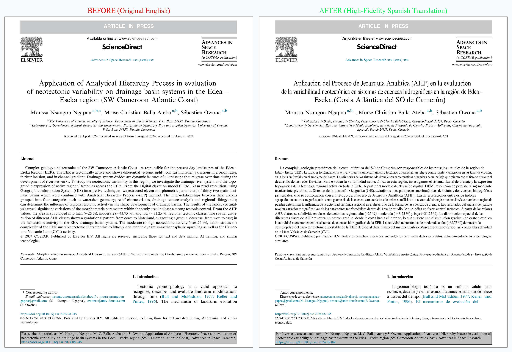
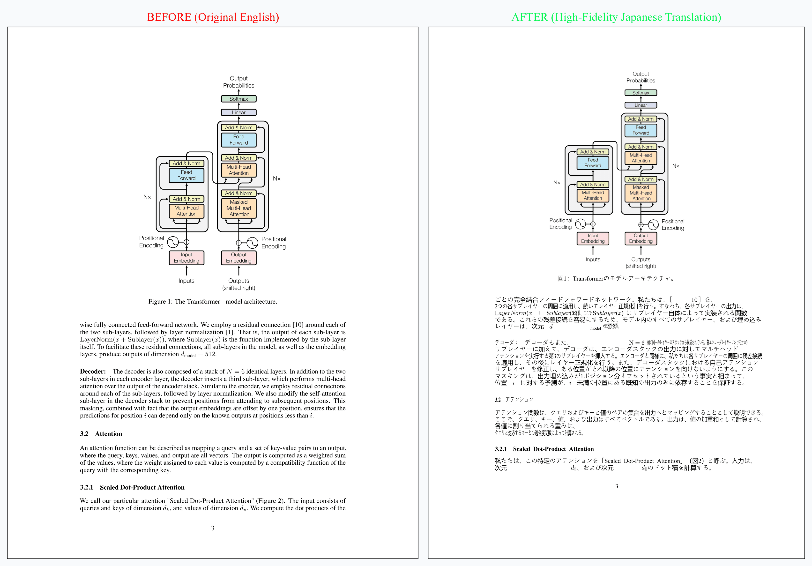
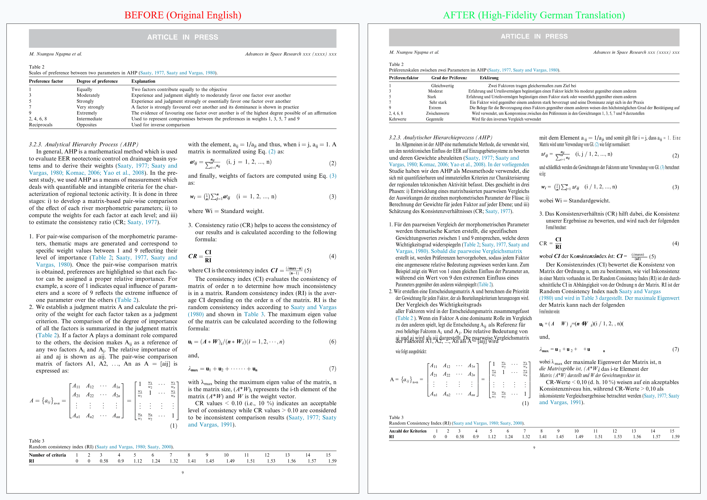

Reconstruct and Translate Scientific PDFs with Pixel-Perfect Precision.
An open-source, local-first scientific translation engine. Preserve complex double columns, formulas, and tables using advanced AI models while ensuring absolute privacy.

Bridging the Academic Inequality Gap
RockTranslate was born out of academic necessity. Created by students to empower researchers worldwide—particularly in developing regions—to access, translate, and master scientific papers without financial barriers.
Global Institutes Support
Underfunded schools and universities are given direct, absolute access to English-restricted research papers in their native languages.
Scientific PhDs & Researchers
Allows PhD candidates to translate, annotate, and compare double-column paper translations on-the-fly with perfect visual retention.
Libraries & Public Databases
Supports translating, archiving, and cataloging international databases into localized knowledge pools without design drift.
"Translating Elsevier earth science papers for my geology students."
"Comparing structural AI transformer model documentation on-the-fly."
"Accessing Springer Nature papers without expensive paywall barriers."
"Translating medical journals locally to support rural diagnostics."
"Evaluating parallel English-German machine learning abstracts."
"Translating Elsevier earth science papers for my geology students."
"Comparing structural AI transformer model documentation on-the-fly."
"Accessing Springer Nature papers without expensive paywall barriers."
"Translating medical journals locally to support rural diagnostics."
"Evaluating parallel English-German machine learning abstracts."
Built for Complex Geometries
Discover the layout-preservation algorithms and local-first architecture behind the translation engine.
Pixel-Perfect DOM Positioning
Utilizes pdf2htmlEX to deconstruct the PDF's native font vectors, columns, and figures, wrapping them in an instrumented web interface. Supports automatic scaling to keep cell columns fully aligned without any overlaps.

100% Offline with Ollama
Ensure complete confidentiality for proprietary or sensitive scientific drafts. Run fully offline models locally on your GPU/CPU with no external API keys required.
Frontier Models Support
Dynamically route your queries to Gemini, GPT, Claude, DeepSeek, or other LLMs. Supports custom base endpoints and personalized temperature settings.
Visual Demonstrations: Before & After
Compare original English scientific documents with their native translated counterparts. RockTranslate achieves absolute layout fidelity across diverse publishers, fonts, and scripts.
🔬 1. English to Spanish (Elsevier Double-Column Layout)
Demonstrating perfect preservation of multi-column text flow, publisher headers, and author blocks. The original Elsevier double-column layout is fully retained with zero text-overlapping or margin drift.

🧠 2. English to French (Attention Is All You Need — Abstract & Title)
Demonstrating precise preservation of scientific structures, titles, paragraph flows, and complex mathematical formulas. Original academic proportions remain completely intact.
🌸 3. English to Japanese (Attention Is All You Need — Paragraph Flow)
Demonstrating robust handling of double-byte CJK characters without vertical line collapses or overlapping. Japanese Kanji and Kana characters are rendered cleanly with proportional horizontal scaling.

🌸 4. English to German (Elsevier Double-Column Layout — Paragraph Flow and Table)
Demonstrating robust preservation of tables and math formulas in a double-column layout. High clarity of paragraphs, tabular styles, and preservation of mathematical vectors.

Designed for Developers & Power Users
Use the graphical interface for instant visual checks, or integrate RockTranslate directly into your scripts and automated workflows.
-
</>
Integrated Command-Line Interface (CLI): Translate, align, and print large directories of PDFs globally with a single terminal command.
-
</>
Programmatic Python API: Import RockTranslator into your python scripts, customise temperatures, models, and custom Ollama base gateways in 5 lines of code.
-
</>
No GUI Overhead: Keep execution files under 100KB for CLI servers while preserving all layout-reconstruction features.
Ready to Preserving Layout. Translating Knowledge?
Download the standalone installation package or start coding with our Python package today.